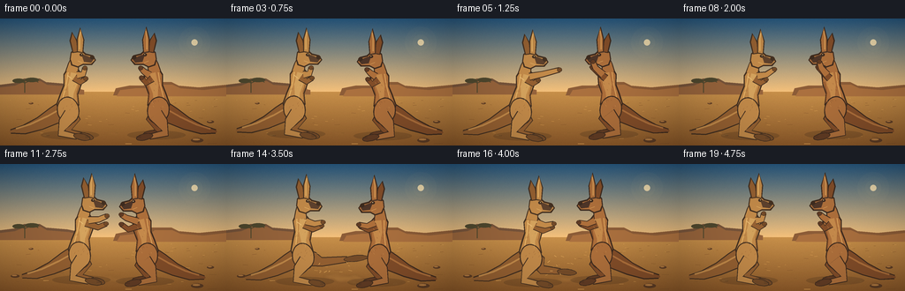
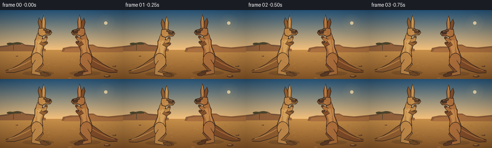

CODING AGENTS AS PIXEL WORLD MODELS
traex/GPT-5.6-Sol · instance_preservation_0009
点击播放 · 原生 RGB 像素
逐轮保存的候选
回放视频、检查图与代码变化。
每份候选均可单独播放。实际图片检查记录在下方工具轨迹中。
候选 01播放与检查图
点击播放 · 原生 RGB 像素


展开代码变化
--- 上一保存版本
+++ 本次保存版本
@@ -0,0 +1,318 @@
+from pathlib import Path
+import math
+import numpy as np
+from PIL import Image, ImageDraw, ImageFilter
+import artifact_io
+
+# Deterministic, hand-built 2D animation. It is rendered large and reduced for clean edges.
+W, H, N, FPS = 256, 144, 20, 4.0
+SS = 4
+TAU = 2 * math.pi
+
+
+def scpt(p):
+ return (int(round(p[0] * SS)), int(round(p[1] * SS)))
+
+def polygon(d, pts, fill):
+ d.polygon([scpt(p) for p in pts], fill=fill)
+
+def ellipse(d, box, fill, outline=None, width=1):
+ d.ellipse(tuple(int(round(v * SS)) for v in box), fill=fill, outline=outline, width=max(1, int(width*SS)))
+
+def line(d, pts, fill, width=1, joint='curve'):
+ d.line([scpt(p) for p in pts], fill=fill, width=max(1, int(round(width*SS))), joint=joint)
+
+def bezier(p0, p1, p2, p3, n=18):
+ out=[]
+ for u in np.linspace(0,1,n):
+ v=1-u
+ out.append((v**3*p0[0]+3*v*v*u*p1[0]+3*v*u*u*p2[0]+u**3*p3[0],
+ v**3*p0[1]+3*v*v*u*p1[1]+3*v*u*u*p2[1]+u**3*p3[1]))
+ return out
+
+def tube_polygon(points, widths):
+ pts=np.asarray(points,float); widths=np.asarray(widths,float)
+ left=[]; right=[]
+ for i,p in enumerate(pts):
+ if i==0: tangent=pts[1]-pts[0]
+ elif i==len(pts)-1: tangent=pts[-1]-pts[-2]
+ else: tangent=pts[i+1]-pts[i-1]
+ ln=np.linalg.norm(tangent)
+ normal=np.array([-tangent[1],tangent[0]])/(ln if ln else 1)
+ left.append(tuple(p+normal*widths[i])); right.append(tuple(p-normal*widths[i]))
+ return left+right[::-1]
+
+def draw_tube(d, points, widths, fill, outline, outline_add=1.15):
+ polygon(d, tube_polygon(points,[w+outline_add for w in widths]), outline)
+ polygon(d, tube_polygon(points,widths), fill)
+ ellipse(d,(points[-1][0]-widths[-1],points[-1][1]-widths[-1],points[-1][0]+widths[-1],points[-1][1]+widths[-1]),fill)
+
+def rotated_ellipse(d, center, rx, ry, angle, fill, outline=None, width=1):
+ ca,sa=math.cos(angle),math.sin(angle)
+ pts=[]
+ for a in np.linspace(0,TAU,34,endpoint=False):
+ x=rx*math.cos(a); y=ry*math.sin(a)
+ pts.append((center[0]+x*ca-y*sa,center[1]+x*sa+y*ca))
+ if outline:
+ # enlarged outline approximation
+ pts2=[]
+ for a in np.linspace(0,TAU,34,endpoint=False):
+ x=(rx+width)*math.cos(a); y=(ry+width)*math.sin(a)
+ pts2.append((center[0]+x*ca-y*sa,center[1]+x*sa+y*ca))
+ polygon(d,pts2,outline)
+ polygon(d,pts,fill)
+
+
+def make_background():
+ rng=np.random.default_rng(1129)
+ arr=np.zeros((H*SS,W*SS,3),np.uint8)
+ horizon=int(83*SS)
+ # luminous outback sky
+ for y in range(horizon):
+ q=y/max(1,horizon-1)
+ top=np.array([39,91,137.]); bot=np.array([238,194,129.])
+ c=top*(1-q)+bot*q
+ arr[y,:,]=np.clip(c,0,255)
+ # sandy ground with subtle fine grain
+ for y in range(horizon,H*SS):
+ q=(y-horizon)/max(1,H*SS-horizon)
+ c=np.array([194,145,78.])*(1-q)+np.array([138,91,44.])*q
+ arr[y,:,]=np.clip(c,0,255)
+ noise=rng.normal(0,2.0,(H*SS,W*SS,1))
+ arr=np.clip(arr.astype(float)+noise,0,255).astype(np.uint8)
+ im=Image.fromarray(arr,'RGB')
+ d=ImageDraw.Draw(im)
+ # Sun and soft aura
+ aura=Image.new('RGBA',im.size,(0,0,0,0)); ad=ImageDraw.Draw(aura)
+ for r,a in [(18,7),(13,10),(9,18)]:
+ ellipse(ad,(220-r,27-r,220+r,27+r),(255,228,165,a))
+ ellipse(ad,(216.4,23.4,223.6,30.6),(255,237,190,210))
+ im=Image.alpha_composite(im.convert('RGBA'),aura)
+ d=ImageDraw.Draw(im)
+ # far mesas and escarpments
+ polygon(d,[(0,75),(16,73),(27,68),(45,68),(52,72),(76,74),(91,77),(91,86),(0,86)],(116,85,61,255))
+ polygon(d,[(0,78),(17,76),(29,71),(46,71),(53,75),(78,77),(95,81),(95,86),(0,86)],(147,101,63,255))
+ polygon(d,[(131,79),(146,76),(162,76),(168,72),(194,72),(202,76),(225,78),(256,75),(256,87),(128,87)],(136,93,58,255))
+ polygon(d,[(136,81),(153,79),(169,79),(175,75),(195,75),(204,79),(230,81),(256,78),(256,88),(132,88)],(166,113,66,255))
+ # sparse distant grass and acacia silhouette
+ line(d,[(28,84),(28,71)],(76,72,48,220),1)
+ line(d,[(28,73),(20,70),(15,72)],(76,72,48,220),1.1)
+ line(d,[(28,73),(37,69),(43,72)],(76,72,48,220),1.1)
+ ellipse(d,(14,68,28,73),(76,72,48,180)); ellipse(d,(28,67,44,72),(76,72,48,180))
+ # ground striations and stones
+ for i in range(55):
+ y=float(rng.uniform(89,142)); x=float(rng.uniform(0,256)); length=float(rng.uniform(1,7)*(0.5+(y-88)/54))
+ c=(126,84,42,85) if i%2 else (229,175,95,65)
+ line(d,[(x,y),(x+length,y+rng.uniform(-.3,.3))],c,max(.25,(y-82)/130))
+ for x,y,rx in [(17,127,5),(238,117,4),(223,138,7),(35,96,2.5)]:
+ ellipse(d,(x-rx,y-rx*.35,x+rx,y+rx*.35),(92,62,39,170))
+ ellipse(d,(x-rx*.75,y-rx*.30,x+rx*.45,y),(177,125,69,190))
+ return im
+
+BACKGROUND=make_background()
+
+PALE={
+ 'body':(189,139,77,255),'light':(222,178,105,255),'dark':(115,77,43,255),
+ 'shadow':(145,97,52,255),'outline':(66,49,35,255),'muzzle':(91,66,47,255),'belly':(207,164,98,255)
+}
+RUSSET={
+ 'body':(169,112,62,255),'light':(209,157,91,255),'dark':(96,61,38,255),
+ 'shadow':(127,78,43,255),'outline':(60,43,32,255),'muzzle':(76,54,42,255),'belly':(192,139,79,255)
+}
+
+
+def draw_kangaroo(canvas, hip, facing, pal, pose, identity):
+ """Paint one anatomically stylized kangaroo from a persistent local skeleton."""
+ layer=Image.new('RGBA',canvas.size,(0,0,0,0)); d=ImageDraw.Draw(layer)
+ lean=pose.get('lean',0.0); squash=pose.get('squash',0.0)
+ hx,hy=hip
+ def T(p):
+ x,y=p
+ # lean moves upper body along its local facing axis, while feet stay planted
+ x2=x + lean*max(0,min(1,-y/58))
+ y2=y + squash*max(0,min(1,-y/60))
+ return (hx+facing*x2,hy+y2)
+ # soft contact shadow, always below this individual
+ ellipse(d,(hx-33,hy+24,hx+33,hy+34),(55,38,25,55))
+
+ # Long counterbalancing tail (behind the body), curved down to the sand.
+ tail_pts=[T((-6,1)),T((-18,7)),T((-34,16)),T((-52,23)),T((-67,25))]
+ draw_tube(d,tail_pts,[10.5,9,6.5,4.2,1.3],pal['shadow'],pal['outline'],1.15)
+ line(d,[T((-10,-1)),T((-26,8)),T((-45,17)),T((-61,22))],pal['body'],2.0)
+
+ kick=float(pose.get('kick',0))
+ # Far leg: grounded except during the iconic forward kick.
+ if kick>0.02:
+ k=kick
+ far=[T((-2,0)),T((4+6*k,8-4*k)),T((2+17*k,22-15*k)),T((14+34*k,29-25*k))]
+ widths=[8.7,7.2,4.3,2.7]
+ else:
+ far=[T((-4,0)),T((4,12)),T((-2,25)),T((13,29))]
+ widths=[8.4,7,3.8,2.4]
+ draw_tube(d,far,widths,pal['shadow'],pal['outline'],1.0)
+ # far long foot / blackish claws
+ ang=math.atan2(far[-1][1]-far[-2][1],far[-1][0]-far[-2][0])
+ foot_center=(far[-1][0]+facing*(5.5+4*kick)*math.cos(ang),far[-1][1]+facing*(5.5+4*kick)*math.sin(ang))
+ rotated_ellipse(d,foot_center,8+5*kick,3.0,ang,pal['dark'],pal['outline'],.7)
+
+ # Main torso with powerful rump and a narrow upper chest.
+ torso_local=[(-11,3),(-14,-6),(-10,-17),(-6,-27),(-6,-39),(-1,-47),(7,-47),(13,-39),(12,-29),(8,-17),(9,-6),(6,2)]
+ torso=[T(p) for p in torso_local]
+ polygon(d,[T((-12.3,4)),T((-15.5,-6)),T((-11.3,-18)),T((-7.3,-28)),T((-7.2,-40)),T((-1.8,-48.5)),T((7.8,-48.5)),T((14.4,-39)),T((13.2,-28)),T((9.2,-17)),T((10.5,-5)),T((7,3))],pal['outline'])
+ polygon(d,torso,pal['body'])
+ # Chest/abdomen planes give readable volume.
+ polygon(d,[T((2,-45)),T((9,-40)),T((8,-28)),T((4,-18)),T((3,-5)),T((-1,-9)),T((-2,-28))],pal['belly'])
+ line(d,[T((-8,-13)),T((-4,-29)),T((-2,-42))],pal['light'],1.25)
+ line(d,[T((9,-7)),T((8,-18)),T((11,-31))],pal['shadow'],1.05)
+
+ # Near huge thigh, hock and long planted foot.
+ thigh_c=T((-2,1))
+ rotated_ellipse(d,thigh_c,11.5,14.5,-.18*facing,pal['body'],pal['outline'],1.15)
+ near=[T((1,6)),T((-6,15)),T((-10,27)),T((8,31))]
+ draw_tube(d,near,[7.6,6.2,3.8,2.3],pal['body'],pal['outline'],1.0)
+ nang=math.atan2(near[-1][1]-near[-2][1],near[-1][0]-near[-2][0])
+ nf=(near[-1][0]+facing*5.5,near[-1][1]+.2)
+ rotated_ellipse(d,nf,9,3.1,nang,pal['dark'],pal['outline'],.75)
+ # toes
+ for oy in (-1.0,.8):
+ line(d,[(nf[0]+facing*4,nf[1]+oy),(nf[0]+facing*9,nf[1]+oy*.4)],pal['outline'],.55)
+
+ # Neck rises from the torso.
+ draw_tube(d,[T((2,-42)),T((4,-50)),T((6,-57))],[6.2,5.4,4.3],pal['body'],pal['outline'],1.0)
+
+ # Far arm first, then face and near arm for stable depth ordering.
+ arms=pose['arms']
+ def arm(points, far=False):
+ pp=[T(p) for p in points]
+ col=pal['shadow'] if far else pal['body']
+ draw_tube(d,pp,[3.5,2.7,2.15],col,pal['outline'],.85)
+ ellipse(d,(pp[-1][0]-2.7,pp[-1][1]-2.4,pp[-1][0]+2.7,pp[-1][1]+2.4),pal['dark'],pal['outline'],.55)
+ # separated boxing digits
+ line(d,[(pp[-1][0],pp[-1][1]),(pp[-1][0]+facing*2.8,pp[-1][1]+.7)],pal['outline'],.55)
+ arm(arms[1],True)
+
+ # Head and long muzzle.
+ headpoly=[T((1,-57)),T((2,-64)),T((7,-68)),T((13,-66)),T((17,-62)),T((25,-60)),T((28,-56)),T((24,-52)),T((15,-52)),T((9,-49)),T((3,-51))]
+ outlinepoly=[T((-.2,-57)),T((1,-65)),T((6.5,-69.5)),T((13.5,-67.5)),T((18,-63.5)),T((26,-61.5)),T((29.5,-56)),T((25,-50.5)),T((15,-50.5)),T((9,-47.5)),T((1.5,-50))]
+ polygon(d,outlinepoly,pal['outline']); polygon(d,headpoly,pal['body'])
+ # brow and muzzle planes
+ polygon(d,[T((13,-63)),T((20,-60.5)),T((27,-57)),T((24,-53)),T((16,-54))],pal['muzzle'])
+ ellipse(d,(T((25.3,-59))[0]-2.5,T((25.3,-59))[1]-2.2,T((25.3,-59))[0]+2.5,T((25.3,-59))[1]+2.2),pal['outline'])
+ # Ear pair, persistent asymmetry for identity clarity.
+ eback=[T((4,-65)),T((1,-78)),T((3,-87+identity)),T((7,-78)),T((9,-66))]
+ efront=[T((9,-66)),T((9,-80)),T((12,-90-identity)),T((15,-79)),T((14,-65))]
+ polygon(d,[T((3,-64)),T((-.5,-78)),T((2.2,-89+identity)),T((8.3,-78)),T((10,-65))],pal['outline']); polygon(d,eback,pal['shadow'])
+ polygon(d,[T((8,-65)),T((7.8,-80)),T((11.4,-92-identity)),T((16.2,-79)),T((15,-64))],pal['outline']); polygon(d,efront,pal['body'])
+ line(d,[T((11,-68)),T((11,-82)),T((12,-87-identity))],pal['light'],1.25)
+ # eye, catchlight, cheek
+ eye=T((13,-62)); ellipse(d,(eye[0]-2.0,eye[1]-1.7,eye[0]+2.0,eye[1]+1.7),pal['outline'])
+ ellipse(d,(eye[0]+facing*.35-.45,eye[1]-.8,eye[0]+facing*.35+.45,eye[1]+.1),(248,224,166,255))
+ line(d,[T((9,-55)),T((14,-53))],pal['light'],.65)
+ arm(arms[0],False)
+
+ # Directional fur strokes remain attached to each animal across all frames.
+ rng=np.random.default_rng(300+identity)
+ for j in range(24):
+ lx=float(rng.uniform(-8,9)); ly=float(rng.uniform(-37,3))
+ if (lx/12)**2+((ly+16)/27)**2 < 1:
+ p=T((lx,ly)); ln=float(rng.uniform(.8,2.2))
+ col=pal['light'] if j%3==0 else pal['shadow']
+ line(d,[p,(p[0]-facing*.6*ln,p[1]+ln)],col,.35)
+ # individual marker: left has pale shoulder slash, right has darker brow ridge
+ if identity==1:
+ line(d,[T((-3,-39)),T((2,-35))],(232,190,116,190),1.1)
+ else:
+ line(d,[T((7,-65)),T((14,-64))],(83,52,34,210),1.0)
+
+ canvas.alpha_composite(layer)
+
+
+def draw_dust(canvas, frame, amount, center):
+ if amount<=0: return
+ rng=np.random.default_rng(7100+frame)
+ ov=Image.new('RGBA',canvas.size,(0,0,0,0)); d=ImageDraw.Draw(ov)
+ # translucent windblown puffs at the combatants' feet
+ for i in range(int(18+24*amount)):
+ a=rng.uniform(0,TAU); rad=rng.uniform(3,23)*amount
+ x=center[0]+math.cos(a)*rad+rng.uniform(-4,4)
+ y=center[1]+math.sin(a)*rad*.25+rng.uniform(-1,2)
+ r=rng.uniform(.6,3.2)*(0.5+amount)
+ col=(221,169,91,int(rng.uniform(18,58)*amount))
+ ellipse(d,(x-r*1.8,y-r*.55,x+r*1.8,y+r*.55),col)
+ ov=ov.filter(ImageFilter.GaussianBlur(1.3*SS))
+ canvas.alpha_composite(ov)
+
+
+def smoothstep(a,b,x):
+ if a==b: return float(x>=b)
+ z=max(0,min(1,(x-a)/(b-a)))
+ return z*z*(3-2*z)
+
+def pulse(x,a,b,c,d):
+ return smoothstep(a,b,x)*(1-smoothstep(c,d,x))
+
+
+def render_frame(fi):
+ t=fi/FPS
+ im=BACKGROUND.copy().convert('RGBA')
+ # action beats: cautious bounce, a jab, a clinch, then a classic tail-supported kick.
+ jab=pulse(t,.75,1.25,1.75,2.2)
+ approach=smoothstep(1.8,2.65,t)*(1-smoothstep(4.05,4.75,t))
+ clinch=pulse(t,2.1,2.65,3.85,4.25)
+ kick=pulse(t,2.75,3.35,3.75,4.25)
+ impact=pulse(t,3.25,3.5,3.8,4.15)
+ bob=math.sin(t*TAU*1.05)
+ left_x=79+13*approach-3*impact
+ right_x=177-13*approach+6*impact
+ left_y=103+1.25*bob+2.0*kick
+ right_y=103-1.0*bob+1.1*impact
+
+ # local-coordinate arm paths [shoulder, elbow, fist]
+ L_near=[(8,-39),(15+8*jab+5*clinch,-40-2*jab),(17+25*jab+12*clinch,-47+3*clinch)]
+ L_far=[(5,-36),(12+7*clinch,-31),(18+10*clinch,-35)]
+ R_near=[(8,-39),(14+7*clinch,-43),(18+9*clinch,-47+4*jab)]
+ R_far=[(5,-35),(12+7*clinch,-30),(17+10*clinch,-36)]
+ # Raised block when struck by the pale fighter's jab.
+ if jab>0:
+ R_near=[(8,-39),(13+4*jab,-47),(15+5*jab,-54)]
+ R_far=[(5,-35),(11+3*jab,-42),(17+4*jab,-48)]
+ if kick>0.05:
+ # hands keep contact at the shoulders during the kick
+ L_near=[(8,-39),(17,-36),(27,-38)]
+ L_far=[(5,-35),(14,-30),(25,-34)]
+ R_near=[(8,-39),(16,-35),(26,-37)]
+ R_far=[(5,-35),(14,-31),(24,-35)]
+
+ left_pose={'arms':[L_near,L_far],'lean':-8*kick-2*impact,'kick':kick,'squash':1.2*abs(bob)*(1-kick)}
+ right_pose={'arms':[R_near,R_far],'lean':-9*impact-2*jab,'kick':0,'squash':1.0*abs(bob)}
+
+ # Background dust starts behind their legs.
+ draw_dust(im,fi,.16+.28*approach,(128,130))
+ # Consistent render order; the different palettes and markers preserve both identities.
+ draw_kangaroo(im,(right_x,right_y),-1,RUSSET,right_pose,2)
+ draw_kangaroo(im,(left_x,left_y),1,PALE,left_pose,1)
+ # foreground impact dust and a few kinetic grains
+ draw_dust(im,fi,.12+.72*impact,(132,130))
+ if impact>.1:
+ d=ImageDraw.Draw(im)
+ rng=np.random.default_rng(990+fi)
+ for j in range(10):
+ x=126+rng.uniform(-22,22); y=111+rng.uniform(-13,16)
+ line(d,[(x,y),(x+rng.uniform(-4,4),y+rng.uniform(-2,2))],(236,185,103,int(80*impact)),.5)
+
+ # mild warm cinematic grade/vignette after downsampling
+ im=im.convert('RGB').resize((W,H),Image.Resampling.LANCZOS)
+ a=np.asarray(im).astype(np.float32)
+ yy,xx=np.mgrid[0:H,0:W]
+ vign=1-.13*((xx-W/2)/(W/2))**2-.11*((yy-H/2)/(H/2))**2
+ a*=vign[...,None]
+ a[:,:,0]*=1.035; a[:,:,2]*=.96
+ return np.clip(a,0,255).astype(np.uint8)
+
+
+def main():
+ frames=np.stack([render_frame(i) for i in range(N)],axis=0)
+ artifact_io.save(frames,Path(__file__).resolve().parent)
+
+if __name__=='__main__':
+ main()
可观测工具轨迹
实际执行的命令与返回图片。
命令 1exit 0
/bin/bash -lc "cat prompt.txt && printf '\\n--- RULES ---\\n' && cat GENERATION_RULES.md && printf '\\n--- SPEC ---\\n' && cat task_spec.json"
命令 2exit 0
/bin/bash -lc "find . -maxdepth 2 -type f -printf '%p\\n' | sort && printf '\\n--- tools ---\\n' && command -v ffmpeg && command -v python3 && command -v blender || true"
命令 3exit 0
/bin/bash -lc 'cat artifact_io.py'
命令 4exit 0
/bin/bash -lc "cat > generate.py <<'PY'
from pathlib import Path
import math
import numpy as np
from PIL import Image, ImageDraw, ImageFilter
import artifact_io
# Deterministic, hand-built 2D animation. It is rendered large and reduced for clean edges.
W, H, N, FPS = 256, 144, 20, 4.0
SS = 4
TAU = 2 * math.pi
def scpt(p):
return (int(round(p[0] * SS)), int(round(p[1] * SS)))
def polygon(d, pts, fill):
d.polygon([scpt(p) for p in pts], fill=fill)
def ellipse(d, box, fill, outline=None, width=1):
d.ellipse(tuple(int(round(v * SS)) for v in box), fill=fill, outline=outline, width=max(1, int(width*SS)))
def line(d, pts, fill, width=1, joint='curve'):
d.line([scpt(p) for p in pts], fill=fill, width=max(1, int(round(width*SS))), joint=joint)
def bezier(p0, p1, p2, p3, n=18):
out=[]
for u in np.linspace(0,1,n):
v=1-u
out.append((v**3*p0[0]+3*v*v*u*p1[0]+3*v*u*u*p2[0]+u**3*p3[0],
v**3*p0[1]+3*v*v*u*p1[1]+3*v*u*u*p2[1]+u**3*p3[1]))
return out
def tube_polygon(points, widths):
pts=np.asarray(points,float); widths=np.asarray(widths,float)
left=[]; right=[]
for i,p in enumerate(pts):
if i==0: tangent=pts[1]-pts[0]
elif i==len(pts)-1: tangent=pts[-1]-pts[-2]
else: tangent=pts[i+1]-pts[i-1]
ln=np.linalg.norm(tangent)
normal=np.array([-tangent[1],tangent[0]])/(ln if ln else 1)
left.append(tuple(p+normal*widths[i])); right.append(tuple(p-normal*widths[i]))
return left+right[::-1]
def draw_tube(d, points, widths, fill, outline, outline_add=1.15):
polygon(d, tube_polygon(points,[w+outline_add for w in widths]), outline)
polygon(d, tube_polygon(points,widths), fill)
ellipse(d,(points[-1][0]-widths[-1],points[-1][1]-widths[-1],points[-1][0]+widths[-1],points[-1][1]+widths[-1]),fill)
def rotated_ellipse(d, center, rx, ry, angle, fill, outline=None, width=1):
ca,sa=math.cos(angle),math.sin(angle)
pts=[]
for a in np.linspace(0,TAU,34,endpoint=False):
x=rx*math.cos(a); y=ry*math.sin(a)
pts.append((center[0]+x*ca-y*sa,center[1]+x*sa+y*ca))
if outline:
# enlarged outline approximation
pts2=[]
for a in np.linspace(0,TAU,34,endpoint=False):
x=(rx+width)*math.cos(a); y=(ry+width)*math.sin(a)
pts2.append((center[0]+x*ca-y*sa,center[1]+x*sa+y*ca))
polygon(d,pts2,outline)
polygon(d,pts,fill)
def make_background():
rng=np.random.default_rng(1129)
arr=np.zeros((H*SS,W*SS,3),np.uint8)
horizon=int(83*SS)
# luminous outback sky
for y in range(horizon):
q=y/max(1,horizon-1)
top=np.array([39,91,137.]); bot=np.array([238,194,129.])
c=top*(1-q)+bot*q
arr[y,:,]=np.clip(c,0,255)
# sandy ground with subtle fine grain
for y in range(horizon,H*SS):
q=(y-horizon)/max(1,H*SS-horizon)
c=np.array([194,145,78.])*(1-q)+np.array([138,91,44.])*q
arr[y,:,]=np.clip(c,0,255)
noise=rng.normal(0,2.0,(H*SS,W*SS,1))
arr=np.clip(arr.astype(float)+noise,0,255).astype(np.uint8)
im=Image.fromarray(arr,'RGB')
d=ImageDraw.Draw(im)
# Sun and soft aura
aura=Image.new('RGBA',im.size,(0,0,0,0)); ad=ImageDraw.Draw(aura)
for r,a in [(18,7),(13,10),(9,18)]:
ellipse(ad,(220-r,27-r,220+r,27+r),(255,228,165,a))
ellipse(ad,(216.4,23.4,223.6,30.6),(255,237,190,210))
im=Image.alpha_composite(im.convert('RGBA'),aura)
d=ImageDraw.Draw(im)
# far mesas and escarpments
polygon(d,[(0,75),(16,73),(27,68),(45,68),(52,72),(76,74),(91,77),(91,86),(0,86)],(116,85,61,255))
polygon(d,[(0,78),(17,76),(29,71),(46,71),(53,75),(78,77),(95,81),(95,86),(0,86)],(147,101,63,255))
polygon(d,[(131,79),(146,76),(162,76),(168,72),(194,72),(202,76),(225,78),(256,75),(256,87),(128,87)],(136,93,58,255))
polygon(d,[(136,81),(153,79),(169,79),(175,75),(195,75),(204,79),(230,81),(256,78),(256,88),(132,88)],(166,113,66,255))
# sparse distant grass and acacia silhouette
line(d,[(28,84),(28,71)],(76,72,48,220),1)
line(d,[(28,73),(20,70),(15,72)],(76,72,48,220),1.1)
line(d,[(28,73),(37,69),(43,72)],(76,72,48,220),1.1)
ellipse(d,(14,68,28,73),(76,72,48,180)); ellipse(d,(28,67,44,72),(76,72,48,180))
# ground striations and stones
for i in range(55):
y=float(rng.uniform(89,142)); x=float(rng.uniform(0,256)); length=float(rng.uniform(1,7)*(0.5+(y-88)/54))
c=(126,84,42,85) if i%2 else (229,175,95,65)
line(d,[(x,y),(x+length,y+rng.uniform(-.3,.3))],c,max(.25,(y-82)/130))
for x,y,rx in [(17,127,5),(238,117,4),(223,138,7),(35,96,2.5)]:
ellipse(d,(x-rx,y-rx*.35,x+rx,y+rx*.35),(92,62,39,170))
ellipse(d,(x-rx*.75,y-rx*.30,x+rx*.45,y),(177,125,69,190))
return im
BACKGROUND=make_background()
PALE={
'body':(189,139,77,255),'light':(222,178,105,255),'dark':(115,77,43,255),
'shadow':(145,97,52,255),'outline':(66,49,35,255),'muzzle':(91,66,47,255),'belly':(207,164,98,255)
}
RUSSET={
'body':(169,112,62,255),'light':(209,157,91,255),'dark':(96,61,38,255),
'shadow':(127,78,43,255),'outline':(60,43,32,255),'muzzle':(76,54,42,255),'belly':(192,139,79,255)
}
def draw_kangaroo(canvas, hip, facing, pal, pose, identity):
\"\"\"Paint one anatomically stylized kangaroo from a persistent local skeleton.\"\"\"
layer=Image.new('RGBA',canvas.size,(0,0,0,0)); d=ImageDraw.Draw(layer)
lean=pose.get('lean',0.0); squash=pose.get('squash',0.0)
hx,hy=hip
def T(p):
x,y=p
# lean moves upper body along its local facing axis, while feet stay planted
x2=x + lean*max(0,min(1,-y/58))
y2=y + squash*max(0,min(1,-y/60))
return (hx+facing*x2,hy+y2)
# soft contact shadow, always below this individual
ellipse(d,(hx-33,hy+24,hx+33,hy+34),(55,38,25,55))
# Long counterbalancing tail (behind the body), curved down to the sand.
tail_pts=[T((-6,1)),T((-18,7)),T((-34,16)),T((-52,23)),T((-67,25))]
draw_tube(d,tail_pts,[10.5,9,6.5,4.2,1.3],pal['shadow'],pal['outline'],1.15)
line(d,[T((-10,-1)),T((-26,8)),T((-45,17)),T((-61,22))],pal['body'],2.0)
kick=float(pose.get('kick',0))
# Far leg: grounded except during the iconic forward kick.
if kick>0.02:
k=kick
far=[T((-2,0)),T((4+6*k,8-4*k)),T((2+17*k,22-15*k)),T((14+34*k,29-25*k))]
widths=[8.7,7.2,4.3,2.7]
else:
far=[T((-4,0)),T((4,12)),T((-2,25)),T((13,29))]
widths=[8.4,7,3.8,2.4]
draw_tube(d,far,widths,pal['shadow'],pal['outline'],1.0)
# far long foot / blackish claws
ang=math.atan2(far[-1][1]-far[-2][1],far[-1][0]-far[-2][0])
foot_center=(far[-1][0]+facing*(5.5+4*kick)*math.cos(ang),far[-1][1]+facing*(5.5+4*kick)*math.sin(ang))
rotated_ellipse(d,foot_center,8+5*kick,3.0,ang,pal['dark'],pal['outline'],.7)
# Main torso with powerful rump and a narrow upper chest.
torso_local=[(-11,3),(-14,-6),(-10,-17),(-6,-27),(-6,-39),(-1,-47),(7,-47),(13,-39),(12,-29),(8,-17),(9,-6),(6,2)]
torso=[T(p) for p in torso_local]
polygon(d,[T((-12.3,4)),T((-15.5,-6)),T((-11.3,-18)),T((-7.3,-28)),T((-7.2,-40)),T((-1.8,-48.5)),T((7.8,-48.5)),T((14.4,-39)),T((13.2,-28)),T((9.2,-17)),T((10.5,-5)),T((7,3))],pal['outline'])
polygon(d,torso,pal['body'])
# Chest/abdomen planes give readable volume.
polygon(d,[T((2,-45)),T((9,-40)),T((8,-28)),T((4,-18)),T((3,-5)),T((-1,-9)),T((-2,-28))],pal['belly'])
line(d,[T((-8,-13)),T((-4,-29)),T((-2,-42))],pal['light'],1.25)
line(d,[T((9,-7)),T((8,-18)),T((11,-31))],pal['shadow'],1.05)
# Near huge thigh, hock and long planted foot.
thigh_c=T((-2,1))
rotated_ellipse(d,thigh_c,11.5,14.5,-.18*facing,pal['body'],pal['outline'],1.15)
near=[T((1,6)),T((-6,15)),T((-10,27)),T((8,31))]
draw_tube(d,near,[7.6,6.2,3.8,2.3],pal['body'],pal['outline'],1.0)
nang=math.atan2(near[-1][1]-near[-2][1],near[-1][0]-near[-2][0])
nf=(near[-1][0]+facing*5.5,near[-1][1]+.2)
rotated_ellipse(d,nf,9,3.1,nang,pal['dark'],pal['outline'],.75)
# toes
for oy in (-1.0,.8):
line(d,[(nf[0]+facing*4,nf[1]+oy),(nf[0]+facing*9,nf[1]+oy*.4)],pal['outline'],.55)
# Neck rises from the torso.
draw_tube(d,[T((2,-42)),T((4,-50)),T((6,-57))],[6.2,5.4,4.3],pal['body'],pal['outline'],1.0)
# Far arm first, then face and near arm for stable depth ordering.
arms=pose['arms']
def arm(points, far=False):
pp=[T(p) for p in points]
col=pal['shadow'] if far else pal['body']
draw_tube(d,pp,[3.5,2.7,2.15],col,pal['outline'],.85)
ellipse(d,(pp[-1][0]-2.7,pp[-1][1]-2.4,pp[-1][0]+2.7,pp[-1][1]+2.4),pal['dark'],pal['outline'],.55)
# separated boxing digits
line(d,[(pp[-1][0],pp[-1][1]),(pp[-1][0]+facing*2.8,pp[-1][1]+.7)],pal['outline'],.55)
arm(arms[1],True)
# Head and long muzzle.
headpoly=[T((1,-57)),T((2,-64)),T((7,-68)),T((13,-66)),T((17,-62)),T((25,-60)),T((28,-56)),T((24,-52)),T((15,-52)),T((9,-49)),T((3,-51))]
outlinepoly=[T((-.2,-57)),T((1,-65)),T((6.5,-69.5)),T((13.5,-67.5)),T((18,-63.5)),T((26,-61.5)),T((29.5,-56)),T((25,-50.5)),T((15,-50.5)),T((9,-47.5)),T((1.5,-50))]
polygon(d,outlinepoly,pal['outline']); polygon(d,headpoly,pal['body'])
# brow and muzzle planes
polygon(d,[T((13,-63)),T((20,-60.5)),T((27,-57)),T((24,-53)),T((16,-54))],pal['muzzle'])
ellipse(d,(T((25.3,-59))[0]-2.5,T((25.3,-59))[1]-2.2,T((25.3,-59))[0]+2.5,T((25.3,-59))[1]+2.2),pal['outline'])
# Ear pair, persistent asymmetry for identity clarity.
eback=[T((4,-65)),T((1,-78)),T((3,-87+identity)),T((7,-78)),T((9,-66))]
efront=[T((9,-66)),T((9,-80)),T((12,-90-identity)),T((15,-79)),T((14,-65))]
polygon(d,[T((3,-64)),T((-.5,-78)),T((2.2,-89+identity)),T((8.3,-78)),T((10,-65))],pal['outline']); polygon(d,eback,pal['shadow'])
polygon(d,[T((8,-65)),T((7.8,-80)),T((11.4,-92-identity)),T((16.2,-79)),T((15,-64))],pal['outline']); polygon(d,efront,pal['body'])
line(d,[T((11,-68)),T((11,-82)),T((12,-87-identity))],pal['light'],1.25)
# eye, catchlight, cheek
eye=T((13,-62)); ellipse(d,(eye[0]-2.0,eye[1]-1.7,eye[0]+2.0,eye[1]+1.7),pal['outline'])
ellipse(d,(eye[0]+facing*.35-.45,eye[1]-.8,eye[0]+facing*.35+.45,eye[1]+.1),(248,224,166,255))
line(d,[T((9,-55)),T((14,-53))],pal['light'],.65)
arm(arms[0],False)
# Directional fur strokes remain attached to each animal across all frames.
rng=np.random.default_rng(300+identity)
for j in range(24):
lx=float(rng.uniform(-8,9)); ly=float(rng.uniform(-37,3))
if (lx/12)**2+((ly+16)/27)**2 < 1:
p=T((lx,ly)); ln=float(rng.uniform(.8,2.2))
col=pal['light'] if j%3==0 else pal['shadow']
line(d,[p,(p[0]-facing*.6*ln,p[1]+ln)],col,.35)
# individual marker: left has pale shoulder slash, right has darker brow ridge
if identity==1:
line(d,[T((-3,-39)),T((2,-35))],(232,190,116,190),1.1)
else:
line(d,[T((7,-65)),T((14,-64))],(83,52,34,210),1.0)
canvas.alpha_composite(layer)
def draw_dust(canvas, frame, amount, center):
if amount<=0: return
rng=np.random.default_rng(7100+frame)
ov=Image.new('RGBA',canvas.size,(0,0,0,0)); d=ImageDraw.Draw(ov)
# translucent windblown puffs at the combatants' feet
for i in range(int(18+24*amount)):
a=rng.uniform(0,TAU); rad=rng.uniform(3,23)*amount
x=center[0]+math.cos(a)*rad+rng.uniform(-4,4)
y=center[1]+math.sin(a)*rad*.25+rng.uniform(-1,2)
r=rng.uniform(.6,3.2)*(0.5+amount)
col=(221,169,91,int(rng.uniform(18,58)*amount))
ellipse(d,(x-r*1.8,y-r*.55,x+r*1.8,y+r*.55),col)
ov=ov.filter(ImageFilter.GaussianBlur(1.3*SS))
canvas.alpha_composite(ov)
def smoothstep(a,b,x):
if a==b: return float(x>=b)
z=max(0,min(1,(x-a)/(b-a)))
return z*z*(3-2*z)
def pulse(x,a,b,c,d):
return smoothstep(a,b,x)*(1-smoothstep(c,d,x))
def render_frame(fi):
t=fi/FPS
im=BACKGROUND.copy().convert('RGBA')
# action beats: cautious bounce, a jab, a clinch, then a classic tail-supported kick.
jab=pulse(t,.75,1.25,1.75,2.2)
approach=smoothstep(1.8,2.65,t)*(1-smoothstep(4.05,4.75,t))
clinch=pulse(t,2.1,2.65,3.85,4.25)
kick=pulse(t,2.75,3.35,3.75,4.25)
impact=pulse(t,3.25,3.5,3.8,4.15)
bob=math.sin(t*TAU*1.05)
left_x=79+13*approach-3*impact
right_x=177-13*approach+6*impact
left_y=103+1.25*bob+2.0*kick
right_y=103-1.0*bob+1.1*impact
# local-coordinate arm paths [shoulder, elbow, fist]
L_near=[(8,-39),(15+8*jab+5*clinch,-40-2*jab),(17+25*jab+12*clinch,-47+3*clinch)]
L_far=[(5,-36),(12+7*clinch,-31),(18+10*clinch,-35)]
R_near=[(8,-39),(14+7*clinch,-43),(18+9*clinch,-47+4*jab)]
R_far=[(5,-35),(12+7*clinch,-30),(17+10*clinch,-36)]
# Raised block when struck by the pale fighter's jab.
if jab>0:
R_near=[(8,-39),(13+4*jab,-47),(15+5*jab,-54)]
R_far=[(5,-35),(11+3*jab,-42),(17+4*jab,-48)]
if kick>0.05:
# hands keep contact at the shoulders during the kick
L_near=[(8,-39),(17,-36),(27,-38)]
L_far=[(5,-35),(14,-30),(25,-34)]
R_near=[(8,-39),(16,-35),(26,-37)]
R_far=[(5,-35),(14,-31),(24,-35)]
left_pose={'arms':[L_near,L_far],'lean':-8*kick-2*impact,'kick':kick,'squash':1.2*abs(bob)*(1-kick)}
right_pose={'arms':[R_near,R_far],'lean':-9*impact-2*jab,'kick':0,'squash':1.0*abs(bob)}
# Background dust starts behind their legs.
draw_dust(im,fi,.16+.28*approach,(128,130))
# Consistent render order; the different palettes and markers preserve both identities.
draw_kangaroo(im,(right_x,right_y),-1,RUSSET,right_pose,2)
draw_kangaroo(im,(left_x,left_y),1,PALE,left_pose,1)
# foreground impact dust and a few kinetic grains
draw_dust(im,fi,.12+.72*impact,(132,130))
if impact>.1:
d=ImageDraw.Draw(im)
rng=np.random.default_rng(990+fi)
for j in range(10):
x=126+rng.uniform(-22,22); y=111+rng.uniform(-13,16)
line(d,[(x,y),(x+rng.uniform(-4,4),y+rng.uniform(-2,2))],(236,185,103,int(80*impact)),.5)
# mild warm cinematic grade/vignette after downsampling
im=im.convert('RGB').resize((W,H),Image.Resampling.LANCZOS)
a=np.asarray(im).astype(np.float32)
yy,xx=np.mgrid[0:H,0:W]
vign=1-.13*((xx-W/2)/(W/2))**2-.11*((yy-H/2)/(H/2))**2
a*=vign[...,None]
a[:,:,0]*=1.035; a[:,:,2]*=.96
return np.clip(a,0,255).astype(np.uint8)
def main():
frames=np.stack([render_frame(i) for i in range(N)],axis=0)
artifact_io.save(frames,Path(__file__).resolve().parent)
if __name__=='__main__':
main()
PY
python3 generate.py
ls -lh pixels.npz inspection.png index.html frames/00.png frames/19.png"命令 5exit 0
/bin/bash -lc "python3 - <<'PY'
import numpy as np
from PIL import Image
from pathlib import Path
f=np.stack([np.array(Image.open(p)) for p in sorted(Path('frames').glob('*.png'))])
print('shape',f.shape,f.dtype,'range',f.min(),f.max())
print('mean frame change',np.abs(np.diff(f.astype(float),axis=0)).mean(axis=(1,2,3)).round(2))
print('nonzero changed pixel fraction',(np.any(np.diff(f.astype(int),axis=0)"'!=0,axis=3)).mean(axis=(1,2)).round(3))
PY
command -v chafa || true; command -v viu || true; command -v img2txt || true; command -v magick || true; command -v ffmpeg || true'命令 6exit 0
/bin/bash -lc 'git status --short || true; find frames -type f | wc -l'
保存候选 1 份；完成命令 6 次；可验证图片返回 0 张。原始 API 响应与完整日志保留在本地。